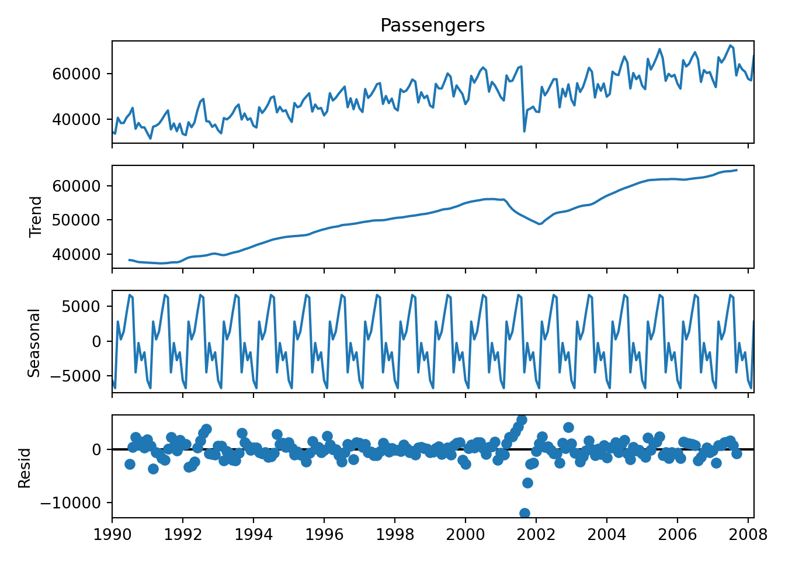
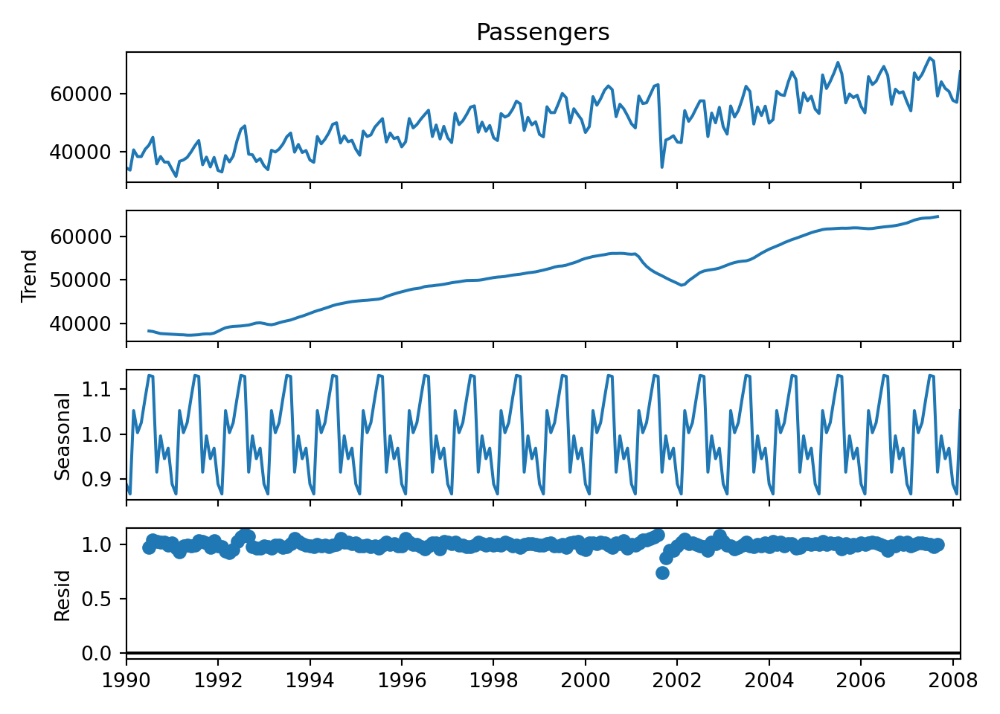
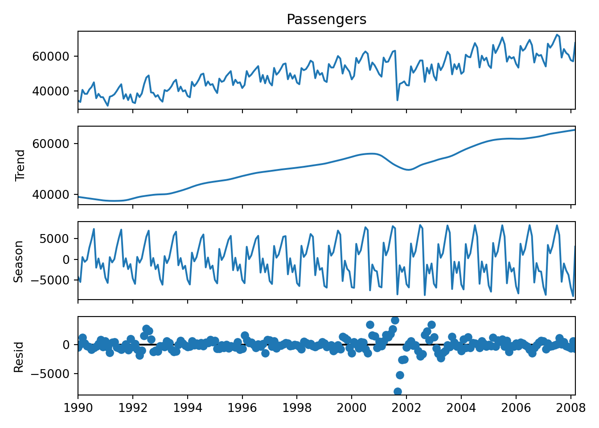

Code
library(tseries)
library(forecast)
library(tidyverse)
library(reticulate)
use_condaenv("msa")
us_airlines <- read.csv("https://raw.githubusercontent.com/sjsimmo2/TimeSeries/master/usairlines.csv")Yang Chen
August 24, 2023
September 16, 2023
Time series is an ordered sequence of observations, typically through equally spaced time intervals. If you have a missing interval, you need to impute that period (e.g. Jan, Feb, April; we need to impute March).
# | echo: false
# | fig-cap: Time Series Use Cases
from IPython.display import Markdown
from tabulate import tabulate
table = [
["Agriculture", "Crop Production"],
["Economics", "Stock Prices"],
["Engineering", "Electric Signals"],
["Meteorology", "Wind Speeds"],
["Social Sciences", "Crime Rates"],
]
Markdown(tabulate(table, headers=["Field", "Use Case"]))| Field | Use Case |
|---|---|
| Agriculture | Crop Production |
| Economics | Stock Prices |
| Engineering | Electric Signals |
| Meteorology | Wind Speeds |
| Social Sciences | Crime Rates |
We focus on univariate time series data for now.
Software assumes that your data is in chronological order and that the intervals are evenly spaced.
Before doing any analysis, always make sure to plot your data!
Time series can have a trend–overall pattern to the data (linear, quadratic, positive, negative, etc.). Notice the cyclic pattern in Figure 2.
Time series is a combination of both signal and noise. Signal is the explained variation–trend, cycle, seasonality. Noise is our error or the unexplained variation.
We are typically interested in forecasting future values with our time series. We need a model in order to forecast values.
Decomposition allows us to separate our time series data into trend, seasonal variation, and error. In most software, in order to decompose we need to have both trend / cycle patterns AND seasonal variation.
| Type | Equation |
|---|---|
| Additive | \(T_t + S_t + R_t\) |
| Multiplicative | \(Y_t = T_t \times S_t \times R_t\) |
\(T_t\) is the trend, \(S_t\) is the season, \(R_t\) is the error. If our time series is multiplicative, then we typically log the series:
\[ \log(Y_t) = \log(T_t) + \log(S_t) + \log(R_t) \]
Now the series is additive.
An advantage of time series decomposition is that we can create seasonally adjusted data (i.e. remove the “effect of seasonality”).
\[ Y_t - S_t = T_t + R_t \]
\[ \frac{Y_t}{S_t} = T_t \times R_t \]
Seasonal length of the time series is the length of one season–how long until the series repeats the “pattern.”
We can plot the the STL decomposition using the stl function along with a seasonal window argument:
The bars on the right of each component represent how much variability is being explained by the component. In R, the smaller the bar the more variability is being explained.


Seasonal and Trend Decomposition using Loess. Smoothness of the trend is decided by the length of the seasonal window that the moving average uses.

To pull out the different decomposition components we can concatenate the different decomposition objects returned by the fit:
season trend resid
1990-01-01 -4209.074208 38999.134669 -442.060461
1990-02-01 -5433.547341 38869.036724 100.510617
1990-03-01 559.028725 38740.856067 1278.115209
1990-04-01 -602.850726 38614.992784 254.857942
1990-05-01 -71.241100 38491.161768 -170.920668
... ... ... ...
2007-11-01 -2674.853169 64848.872472 -207.019303
2007-12-01 -3718.499734 64990.641956 -365.142222
2008-01-01 -6755.005707 65129.993257 -574.987550
2008-02-01 -8822.280962 65266.832075 664.448887
2008-03-01 3061.324052 65401.303910 -644.627961
[219 rows x 3 columns]We can also overlay the trend (blue) and seasonally adjusted data (orange) on our time series data:
Three common techniques for decomposition:
Decomposition will not tell you if have seasonal data nor length of seasonality.
Measures given by Hyndmana nd Athanasopoulos.
\[ F_T = \max(0, 1 - \frac{\text{Var}(R_t)}{\text{Var}(T_t + R_t)}) + 2 \cdot \text{Cov}(R_t, T_t) \]
\[ F_S = \max(0, 1 - \frac{\text{Var}(R_t)}{\text{Var}(S_t + R_t)}) + 2 \cdot \text{Cov}(R_t, S_t) \]